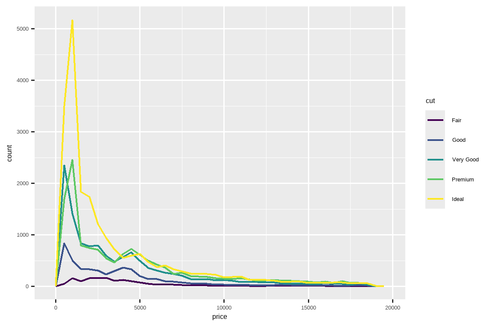
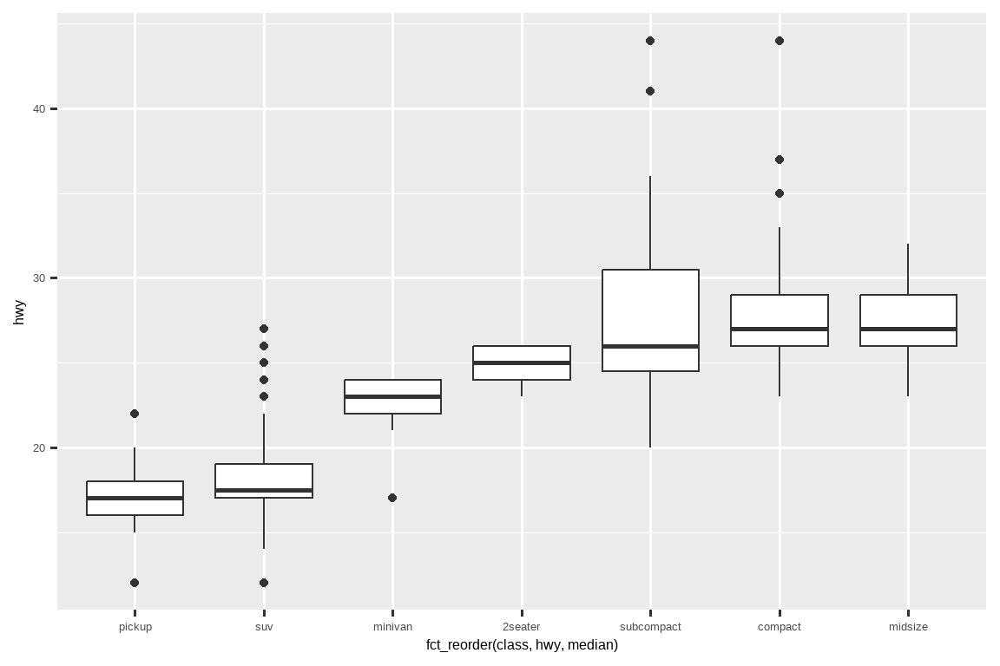

10 Exploratory data analysis
10.1 Introduction
This chapter will show you how to use visualization and transformation to explore your data in a systematic way, a task that statisticians call exploratory data analysis, or EDA for short.
本章将向你展示如何使用可视化和转换来系统地探索数据，统计学家称之为探索性数据分析（exploratory data analysis，简称 EDA）。
EDA is an iterative cycle. You:
EDA 是一个迭代的过程。你需要：
Generate questions about your data.
生成关于数据的问题。Search for answers by visualizing, transforming, and modelling your data.
通过可视化、转换和建模来寻找答案。Use what you learn to refine your questions and/or generate new questions.
利用你所学到的知识来完善你的问题和/或生成新的问题。
EDA is not a formal process with a strict set of rules.
EDA 并非一个有着严格规则的正式流程。
More than anything, EDA is a state of mind.
更重要的是，EDA 是一种思维状态。
During the initial phases of EDA you should feel free to investigate every idea that occurs to you.
在 EDA 的初始阶段，你应该自由地去探究你脑海中出现的每一个想法。
Some of these ideas will pan out, and some will be dead ends.
其中一些想法会成功，而另一些则会是死胡同。
As your exploration continues, you will home in on a few particularly productive insights that you’ll eventually write up and communicate to others.
随着你探索的深入，你会逐渐聚焦于一些特别富有成效的见解，并最终将它们整理成文，与他人交流。
EDA is an important part of any data analysis, even if the primary research questions are handed to you on a platter, because you always need to investigate the quality of your data.
EDA 是任何数据分析中都至关重要的一环，即使主要的研究问题已经现成地摆在你面前，因为你总是需要考察数据的质量。
Data cleaning is just one application of EDA: you ask questions about whether your data meets your expectations or not.
数据清洗只是 EDA 的一种应用：你需要提出问题，判断你的数据是否符合预期。
To do data cleaning, you’ll need to deploy all the tools of EDA: visualization, transformation, and modelling.
要进行数据清洗，你需要运用 EDA 的所有工具：可视化、转换和建模。
10.1.1 Prerequisites
In this chapter we’ll combine what you’ve learned about dplyr and ggplot2 to interactively ask questions, answer them with data, and then ask new questions.
在本章中，我们将结合你所学的 dplyr 和 ggplot2 知识，以交互方式提出问题，用数据回答问题，然后再提出新的问题。
10.2 Questions
“There are no routine statistical questions, only questionable statistical routines.” — Sir David Cox
> “没有常规的统计问题，只有值得怀疑的统计套路。” — David Cox 爵士
“Far better an approximate answer to the right question, which is often vague, than an exact answer to the wrong question, which can always be made precise.” — John Tukey
> “对正确问题（通常是模糊的）的近似回答，远胜于对错误问题（总能精确化）的精确回答。” — John Tukey
Your goal during EDA is to develop an understanding of your data.
你在 EDA 期间的目标是建立对数据的理解。
The easiest way to do this is to use questions as tools to guide your investigation.
最简单的方法是使用问题作为工具来引导你的调查。
When you ask a question, the question focuses your attention on a specific part of your dataset and helps you decide which graphs, models, or transformations to make.
当你提出一个问题时，这个问题会将你的注意力集中到数据集的特定部分，并帮助你决定制作哪些图表、模型或进行哪些转换。
EDA is fundamentally a creative process.
EDA 本质上是一个创造性的过程。
And like most creative processes, the key to asking quality questions is to generate a large quantity of questions.
和大多数创造性过程一样，提出 高质量 问题的关键在于生成 大量 的问题。
It is difficult to ask revealing questions at the start of your analysis because you do not know what insights can be gleaned from your dataset.
在分析之初很难提出有启发性的问题，因为你不知道可以从数据集中获得哪些见解。
On the other hand, each new question that you ask will expose you to a new aspect of your data and increase your chance of making a discovery.
另一方面，你每提出一个新问题，都会让你接触到数据的一个新方面，并增加你做出发现的机会。
You can quickly drill down into the most interesting parts of your data—and develop a set of thought-provoking questions—if you follow up each question with a new question based on what you find.
如果你在每个问题之后都根据你的发现提出一个新问题，你就可以迅速深入到数据最有趣的部分，并形成一系列发人深省的问题。
There is no rule about which questions you should ask to guide your research.
关于应该提出哪些问题来指导你的研究，并没有固定的规则。
However, two types of questions will always be useful for making discoveries within your data.
然而，有两类问题对于在数据中进行发现总是很有用的。
You can loosely word these questions as:
你可以将这些问题大致表述为：
What type of variation occurs within my variables?
我的变量内部存在哪种类型的变异？What type of covariation occurs between my variables?
我的变量之间存在哪种类型的协变？
The rest of this chapter will look at these two questions.
本章的其余部分将探讨这两个问题。
We’ll explain what variation and covariation are, and we’ll show you several ways to answer each question.
我们将解释什么是变异和协变，并向你展示几种回答每个问题的方法。
10.3 Variation
Variation is the tendency of the values of a variable to change from measurement to measurement.
**变异（Variation）**是指一个变量的值在每次测量之间发生变化的趋势。
You can see variation easily in real life; if you measure any continuous variable twice, you will get two different results.
你在现实生活中很容易看到变异；如果你对任何连续变量进行两次测量，你会得到两个不同的结果。
This is true even if you measure quantities that are constant, like the speed of light.
即使你测量的是像光速这样的恒定量，情况也是如此。
Each of your measurements will include a small amount of error that varies from measurement to measurement.
你的每次测量都会包含少量的误差，这个误差在每次测量之间都会有所不同。
Variables can also vary if you measure across different subjects (e.g., the eye colors of different people) or at different times (e.g., the energy levels of an electron at different moments).
如果你测量不同的主体（例如，不同人的眼睛颜色）或在不同的时间（例如，一个电子在不同时刻的能级），变量也会发生变化。
Every variable has its own pattern of variation, which can reveal interesting information about how it varies between measurements on the same observation as well as across observations.
每个变量都有其自身的变异模式，这可以揭示关于它在同一次观测的测量之间以及不同观测之间如何变化的有趣信息。
The best way to understand that pattern is to visualize the distribution of the variable’s values, which you’ve learned about in Chapter 1.
理解这种模式的最佳方法是可视化变量值的分布，你已经在 Chapter 1 中学习过相关内容。
We’ll start our exploration by visualizing the distribution of weights (carat) of ~54,000 diamonds from the diamonds dataset.
我们将通过可视化 diamonds 数据集中约 54,000 颗钻石的重量（carat）分布来开始我们的探索。
Since carat is a numerical variable, we can use a histogram:
由于 carat 是一个数值变量，我们可以使用直方图：
ggplot(diamonds, aes(x = carat)) +
geom_histogram(binwidth = 0.5)
Now that you can visualize variation, what should you look for in your plots?
既然你能够可视化变异，那么你应该在图表中寻找什么呢？
And what type of follow-up questions should you ask?
你应该提出什么样的后续问题呢？
We’ve put together a list below of the most useful types of information that you will find in your graphs, along with some follow-up questions for each type of information.
我们在下面整理了一个列表，列出了你可以在图表中找到的最有用的信息类型，以及针对每种信息类型的一些后续问题。
The key to asking good follow-up questions will be to rely on your curiosity (What do you want to learn more about?) as well as your skepticism (How could this be misleading?).
提出好的后续问题的关键在于依赖你的好奇心（你想了解更多关于什么？）和你的怀疑精神（这怎么可能会误导人？）。
10.3.1 Typical values
In both bar charts and histograms, tall bars show the common values of a variable, and shorter bars show less-common values.
在条形图和直方图中，高条显示变量的常见值，短条显示不那么常见的值。
Places that do not have bars reveal values that were not seen in your data.
没有条形的地方揭示了你的数据中未曾出现的值。
To turn this information into useful questions, look for anything unexpected:
要将这些信息转化为有用的问题，请寻找任何意想不到的地方：
Which values are the most common? Why?
哪些值最常见？为什么？Which values are rare? Why? Does that match your expectations?
哪些值很罕见？为什么？这符合你的预期吗？Can you see any unusual patterns? What might explain them?
你能看到任何不寻常的模式吗？可能的原因是什么？
Let’s take a look at the distribution of carat for smaller diamonds.
让我们来看一下较小钻石的 carat 分布。
smaller <- diamonds |>
filter(carat < 3)
ggplot(smaller, aes(x = carat)) +
geom_histogram(binwidth = 0.01)
This histogram suggests several interesting questions:
这个直方图引出了几个有趣的问题：
Why are there more diamonds at whole carats and common fractions of carats?
为什么在整数克拉和常见的克拉分数处有更多的钻石？Why are there more diamonds slightly to the right of each peak than there are slightly to the left of each peak?
为什么每个峰值右侧的钻石数量比左侧的要多？
Visualizations can also reveal clusters, which suggest that subgroups exist in your data.
可视化还可以揭示聚类，这表明你的数据中存在子群。
To understand the subgroups, ask:
要理解这些子群，可以问：
How are the observations within each subgroup similar to each other?
每个子群内的观测值彼此之间有何相似之处？How are the observations in separate clusters different from each other?
不同聚类中的观测值彼此之间有何不同之处？How can you explain or describe the clusters?
你如何解释或描述这些聚类？Why might the appearance of clusters be misleading?
为什么聚类的出现可能会产生误导？
Some of these questions can be answered with the data while some will require domain expertise about the data.
其中一些问题可以用数据来回答，而另一些则需要关于该数据的领域专业知识。
Many of them will prompt you to explore a relationship between variables, for example, to see if the values of one variable can explain the behavior of another variable.
其中许多问题会促使你探索变量之间的关系，例如，看看一个变量的值是否能解释另一个变量的行为。
We’ll get to that shortly.
我们很快就会谈到这一点。
10.3.2 Unusual values
Outliers are observations that are unusual; data points that don’t seem to fit the pattern.
离群值是异常的观测值；即那些似乎不符合模式的数据点。
Sometimes outliers are data entry errors, sometimes they are simply values at the extremes that happened to be observed in this data collection, and other times they suggest important new discoveries.
有时离群值是数据录入错误，有时它们仅仅是在这次数据收集中碰巧观测到的极端值，而其他时候它们则可能预示着重要的新发现。
When you have a lot of data, outliers are sometimes difficult to see in a histogram.
当你有大量数据时，离群值有时在直方图中很难看出来。
For example, take the distribution of the y variable from the diamonds dataset.
例如，以钻石数据集中的 y 变量分布为例。
The only evidence of outliers is the unusually wide limits on the x-axis.
离群值的唯一证据是 x 轴上异常宽的范围。
ggplot(diamonds, aes(x = y)) +
geom_histogram(binwidth = 0.5)
There are so many observations in the common bins that the rare bins are very short, making it very difficult to see them (although maybe if you stare intently at 0 you’ll spot something).
在常见的箱（bin）中有如此多的观测值，以至于罕见的箱非常短，使得它们很难被看到（尽管如果你仔细盯着 0 的位置，或许能发现点什么）。
To make it easy to see the unusual values, we need to zoom to small values of the y-axis with coord_cartesian():
为了更容易地看到异常值，我们需要使用 coord_cartesian() 来放大 y 轴的较小值部分：
ggplot(diamonds, aes(x = y)) +
geom_histogram(binwidth = 0.5) +
coord_cartesian(ylim = c(0, 50))coord_cartesian() also has an xlim() argument for when you need to zoom into the x-axis.coord_cartesian() 也有一个 xlim() 参数，用于当你需要放大 x 轴时。
ggplot2 also has xlim() and ylim() functions that work slightly differently: they throw away the data outside the limits.
ggplot2 也有 xlim() 和 ylim() 函数，它们的工作方式略有不同：它们会丢弃超出范围的数据。
This allows us to see that there are three unusual values: 0, ~30, and ~60.
这让我们能看到有三个异常值：0、约 30 和约 60。
We pluck them out with dplyr:
我们用 dplyr 把它们挑选出来：
unusual <- diamonds |>
filter(y < 3 | y > 20) |>
select(price, x, y, z) |>
arrange(y)
unusual
#> # A tibble: 9 × 4
#> price x y z
#> <int> <dbl> <dbl> <dbl>
#> 1 5139 0 0 0
#> 2 6381 0 0 0
#> 3 12800 0 0 0
#> 4 15686 0 0 0
#> 5 18034 0 0 0
#> 6 2130 0 0 0
#> 7 2130 0 0 0
#> 8 2075 5.15 31.8 5.12
#> 9 12210 8.09 58.9 8.06The y variable measures one of the three dimensions of these diamonds, in mm.y 变量以毫米（mm）为单位，测量了这些钻石的三个维度之一。
We know that diamonds can’t have a width of 0mm, so these values must be incorrect.
我们知道钻石的宽度不可能是 0 毫米，所以这些值肯定是错误的。
By doing EDA, we have discovered missing data that was coded as 0, which we never would have found by simply searching for NAs.
通过进行 EDA，我们发现了被编码为 0 的缺失数据，这是我们仅通过搜索 NA 永远无法发现的。
Going forward we might choose to re-code these values as NAs in order to prevent misleading calculations.
接下来，我们可能会选择将这些值重新编码为 NA，以防止产生误导性的计算结果。
We might also suspect that measurements of 32mm and 59mm are implausible: those diamonds are over an inch long, but don’t cost hundreds of thousands of dollars!
我们可能还会怀疑 32 毫米和 59 毫米的测量值是不可信的：那些钻石超过一英寸长，但价格却没有达到数十万美元！
It’s good practice to repeat your analysis with and without the outliers.
一个好的做法是，在包含和不包含离群值的情况下重复你的分析。
If they have minimal effect on the results, and you can’t figure out why they’re there, it’s reasonable to omit them, and move on.
如果它们对结果的影响微乎其微，而且你无法找出它们存在的原因，那么省略它们并继续分析是合理的。
However, if they have a substantial effect on your results, you shouldn’t drop them without justification.
然而，如果它们对你的结果有重大影响，你就不应该在没有正当理由的情况下丢弃它们。
You’ll need to figure out what caused them (e.g., a data entry error) and disclose that you removed them in your write-up.
你需要弄清楚是什么导致了它们（例如，数据录入错误），并在你的报告中披露你移除了它们。
10.3.3 Exercises
Explore the distribution of each of the
x,y, andzvariables indiamonds. What do you learn? Think about a diamond and how you might decide which dimension is the length, width, and depth.Explore the distribution of
price. Do you discover anything unusual or surprising? (Hint: Carefully think about thebinwidthand make sure you try a wide range of values.)How many diamonds are 0.99 carat? How many are 1 carat? What do you think is the cause of the difference?
Compare and contrast
coord_cartesian()vs.xlim()orylim()when zooming in on a histogram. What happens if you leavebinwidthunset? What happens if you try and zoom so only half a bar shows?
10.4 Unusual values
If you’ve encountered unusual values in your dataset, and simply want to move on to the rest of your analysis, you have two options.
如果你在数据集中遇到了异常值，并且只想继续进行其余的分析，你有两个选择。
-
Drop the entire row with the strange values:
删除包含异常值的整行：We don’t recommend this option because one invalid value doesn’t imply that all the other values for that observation are also invalid.
我们不推荐这个选项，因为一个无效值并不意味着该观测的所有其他值也都无效。Additionally, if you have low quality data, by the time that you’ve applied this approach to every variable you might find that you don’t have any data left!
此外，如果你的数据质量很低，当你对每个变量都采用这种方法后，你可能会发现你已经没有任何数据了！ -
Instead, we recommend replacing the unusual values with missing values.
相反，我们建议用缺失值替换异常值。The easiest way to do this is to use
mutate()to replace the variable with a modified copy.
最简单的方法是使用mutate()将变量替换为其修改后的副本。You can use the
if_else()function to replace unusual values withNA:
你可以使用if_else()函数将异常值替换为NA：
It’s not obvious where you should plot missing values, so ggplot2 doesn’t include them in the plot, but it does warn that they’ve been removed:
由于不清楚应该在哪里绘制缺失值，ggplot2 在绘图时不会包含它们，但会发出警告，提示它们已被移除：
ggplot(diamonds2, aes(x = x, y = y)) +
geom_point()
#> Warning: Removed 9 rows containing missing values or values outside the scale range
#> (`geom_point()`).To suppress that warning, set na.rm = TRUE:
要抑制该警告，请设置 na.rm = TRUE：
ggplot(diamonds2, aes(x = x, y = y)) +
geom_point(na.rm = TRUE)Other times you want to understand what makes observations with missing values different to observations with recorded values.
其他时候，你想要理解具有缺失值的观测值与具有记录值的观测值有何不同。
For example, in nycflights13::flights1, missing values in the dep_time variable indicate that the flight was cancelled.
例如，在 nycflights13::flights1 中，dep_time 变量中的缺失值表示航班被取消了。
So you might want to compare the scheduled departure times for cancelled and non-cancelled times.
因此，你可能想比较已取消航班和未取消航班的计划起飞时间。
You can do this by making a new variable, using is.na() to check if dep_time is missing.
你可以通过创建一个新变量来实现这一点，使用 is.na() 来检查 dep_time 是否缺失。
nycflights13::flights |>
mutate(
cancelled = is.na(dep_time),
sched_hour = sched_dep_time %/% 100,
sched_min = sched_dep_time %% 100,
sched_dep_time = sched_hour + (sched_min / 60)
) |>
ggplot(aes(x = sched_dep_time)) +
geom_freqpoly(aes(color = cancelled), binwidth = 1/4)However this plot isn’t great because there are many more non-cancelled flights than cancelled flights.
然而，这张图并不理想，因为未取消的航班数量远远多于已取消的航班。
In the next section we’ll explore some techniques for improving this comparison.
在下一节中，我们将探讨一些改进这种比较的技巧。
10.4.1 Exercises
What happens to missing values in a histogram? What happens to missing values in a bar chart? Why is there a difference in how missing values are handled in histograms and bar charts?
Recreate the frequency plot of
scheduled_dep_timecolored by whether the flight was cancelled or not. Also facet by thecancelledvariable. Experiment with different values of thescalesvariable in the faceting function to mitigate the effect of more non-cancelled flights than cancelled flights.
10.5 Covariation
If variation describes the behavior within a variable, covariation describes the behavior between variables.
如果说变异描述的是单个变量内部的行为，那么协变则描述的是变量之间的行为。
Covariation is the tendency for the values of two or more variables to vary together in a related way.
**协变（Covariation）**是两个或多个变量的值以相关的方式一同变化的趋势。
The best way to spot covariation is to visualize the relationship between two or more variables.
发现协变的最好方法是可视化两个或多个变量之间的关系。
10.5.1 A categorical and a numerical variable
For example, let’s explore how the price of a diamond varies with its quality (measured by cut) using geom_freqpoly():
例如，让我们使用 geom_freqpoly() 来探究钻石价格如何随其质量（以 cut 衡量）而变化：
ggplot(diamonds, aes(x = price)) +
geom_freqpoly(aes(color = cut), binwidth = 500, linewidth = 0.75)
Note that ggplot2 uses an ordered color scale for cut because it’s defined as an ordered factor variable in the data.
请注意，ggplot2 对 cut 使用了有序颜色标度，因为它在数据中被定义为一个有序因子变量。
You’ll learn more about these in Section 16.6.
你将在 Section 16.6 章节中学到更多关于这些的内容。
The default appearance of geom_freqpoly() is not that useful here because the height, determined by the overall count, differs so much across cuts, making it hard to see the differences in the shapes of their distributions.
在这里，geom_freqpoly() 的默认外观并不十分有用，因为由总计数决定的高度在不同的 cut（切工）之间差异巨大，这使得我们很难看出它们分布形状的差异。
To make the comparison easier we need to swap what is displayed on the y-axis.
为了让比较更容易，我们需要更换 Y 轴上显示的内容。
Instead of displaying count, we’ll display the density, which is the count standardized so that the area under each frequency polygon is one.
我们将不再显示计数，而是显示密度，密度是经过标准化的计数，使得每个频率多边形下的面积为一。
ggplot(diamonds, aes(x = price, y = after_stat(density))) +
geom_freqpoly(aes(color = cut), binwidth = 500, linewidth = 0.75)
Note that we’re mapping the density to y, but since density is not a variable in the diamonds dataset, we need to first calculate it.
请注意，我们将密度映射到 y，但由于 density 不是 diamonds 数据集中的变量，我们需要先计算它。
We use the after_stat() function to do so.
我们使用 after_stat() 函数来完成这个计算。
There’s something rather surprising about this plot - it appears that fair diamonds (the lowest quality) have the highest average price!
这张图有些出人意料——似乎 “Fair”（最差质量）等级的钻石平均价格最高！
But maybe that’s because frequency polygons are a little hard to interpret - there’s a lot going on in this plot.
但这也许是因为频率多边形有点难以解读——这张图中信息量太大了。
A visually simpler plot for exploring this relationship is using side-by-side boxplots.
一个在视觉上更简洁、用于探索这种关系的图是并排箱线图。
ggplot(diamonds, aes(x = cut, y = price)) +
geom_boxplot()
We see much less information about the distribution, but the boxplots are much more compact so we can more easily compare them (and fit more on one plot).
我们看到的关于分布的信息少了很多，但箱线图更加紧凑，因此我们可以更容易地比较它们（并且可以在一张图上容纳更多内容）。
It supports the counter-intuitive finding that better quality diamonds are typically cheaper!
它支持了一个与直觉相悖的发现：质量更好的钻石通常更便宜！
In the exercises, you’ll be challenged to figure out why.
在练习中，你将需要挑战去弄清楚为什么会这样。
cut is an ordered factor: fair is worse than good, which is worse than very good and so on.cut 是一个有序因子：fair 比 good 差，good 又比 very good 差，以此类推。
Many categorical variables don’t have such an intrinsic order, so you might want to reorder them to make a more informative display.
许多分类变量没有这种内在的顺序，所以你可能想要重新排序它们以获得信息更丰富的展示。
One way to do that is with fct_reorder().
一种方法是使用 fct_reorder()。
You’ll learn more about that function in Section 16.4, but we want to give you a quick preview here because it’s so useful.
你将在 Section 16.4 中学到更多关于该函数的内容，但我们想在这里给你一个快速预览，因为它非常有用。
For example, take the class variable in the mpg dataset.
例如，以 mpg 数据集中的 class 变量为例。
You might be interested to know how highway mileage varies across classes:
你可能想知道不同车辆类别的高速公路里程数有何不同：
ggplot(mpg, aes(x = class, y = hwy)) +
geom_boxplot()
To make the trend easier to see, we can reorder class based on the median value of hwy:
为了使趋势更易于观察，我们可以根据 hwy 的中位数对 class 进行重新排序：
ggplot(mpg, aes(x = fct_reorder(class, hwy, median), y = hwy)) +
geom_boxplot()
If you have long variable names, geom_boxplot() will work better if you flip it 90°.
如果你的变量名很长，将 geom_boxplot() 翻转 90° 会有更好的效果。
You can do that by exchanging the x and y aesthetic mappings.
你可以通过交换 x 和 y 的美学映射来实现这一点。
ggplot(mpg, aes(x = hwy, y = fct_reorder(class, hwy, median))) +
geom_boxplot()10.5.1.1 Exercises
Use what you’ve learned to improve the visualization of the departure times of cancelled vs. non-cancelled flights.
Based on EDA, what variable in the diamonds dataset appears to be most important for predicting the price of a diamond? How is that variable correlated with cut? Why does the combination of those two relationships lead to lower quality diamonds being more expensive?
Instead of exchanging the x and y variables, add
coord_flip()as a new layer to the vertical boxplot to create a horizontal one. How does this compare to exchanging the variables?One problem with boxplots is that they were developed in an era of much smaller datasets and tend to display a prohibitively large number of “outlying values”. One approach to remedy this problem is the letter value plot. Install the lvplot package, and try using
geom_lv()to display the distribution of price vs. cut. What do you learn? How do you interpret the plots?Create a visualization of diamond prices vs. a categorical variable from the
diamondsdataset usinggeom_violin(), then a facetedgeom_histogram(), then a coloredgeom_freqpoly(), and then a coloredgeom_density(). Compare and contrast the four plots. What are the pros and cons of each method of visualizing the distribution of a numerical variable based on the levels of a categorical variable?If you have a small dataset, it’s sometimes useful to use
geom_jitter()to avoid overplotting to more easily see the relationship between a continuous and categorical variable. The ggbeeswarm package provides a number of methods similar togeom_jitter(). List them and briefly describe what each one does.
10.5.2 Two categorical variables
To visualize the covariation between categorical variables, you’ll need to count the number of observations for each combination of levels of these categorical variables.
要可视化分类变量之间的协变，你需要计算这些分类变量各水平组合的观测数量。
One way to do that is to rely on the built-in geom_count():
一种方法是依赖于内置的 geom_count() 函数：
ggplot(diamonds, aes(x = cut, y = color)) +
geom_count()The size of each circle in the plot displays how many observations occurred at each combination of values.
图中每个圆圈的大小显示了在每个值组合处发生的观测次数。
Covariation will appear as a strong correlation between specific x values and specific y values.
协变将表现为特定 x 值和特定 y 值之间的强相关性。
Another approach for exploring the relationship between these variables is computing the counts with dplyr:
探索这些变量之间关系的另一种方法是使用 dplyr 计算计数：
diamonds |>
count(color, cut)
#> # A tibble: 35 × 3
#> color cut n
#> <ord> <ord> <int>
#> 1 D Fair 163
#> 2 D Good 662
#> 3 D Very Good 1513
#> 4 D Premium 1603
#> 5 D Ideal 2834
#> 6 E Fair 224
#> # ℹ 29 more rowsThen visualize with geom_tile() and the fill aesthetic:
然后使用 geom_tile() 和填充美学进行可视化：
If the categorical variables are unordered, you might want to use the seriation package to simultaneously reorder the rows and columns in order to more clearly reveal interesting patterns.
如果分类变量是无序的，你可能需要使用 seriation 包来同时对行和列进行重新排序，以便更清晰地揭示有趣的模式。
For larger plots, you might want to try the heatmaply package, which creates interactive plots.
对于较大的图表，你可能想尝试 heatmaply 包，它可以创建交互式图表。
10.5.2.1 Exercises
How could you rescale the count dataset above to more clearly show the distribution of cut within color, or color within cut?
What different data insights do you get with a segmented bar chart if color is mapped to the
xaesthetic andcutis mapped to thefillaesthetic? Calculate the counts that fall into each of the segments.Use
geom_tile()together with dplyr to explore how average flight departure delays vary by destination and month of year. What makes the plot difficult to read? How could you improve it?
10.5.3 Two numerical variables
You’ve already seen one great way to visualize the covariation between two numerical variables: draw a scatterplot with geom_point().
你已经见过一种可视化两个数值变量协变的好方法：用 geom_point() 绘制散点图。
You can see covariation as a pattern in the points.
你可以将协变看作是数据点中的一种模式。
For example, you can see a positive relationship between the carat size and price of a diamond: diamonds with more carats have a higher price.
例如，你可以看到钻石的克拉大小和价格之间存在正相关关系：克拉数越大的钻石价格越高。
The relationship is exponential.
这种关系是指数级的。
ggplot(smaller, aes(x = carat, y = price)) +
geom_point()
(In this section we’ll use the smaller dataset to stay focused on the bulk of the diamonds that are smaller than 3 carats)
（在本节中，我们将使用 smaller 数据集，以专注于小于 3 克拉的大部分钻石）
Scatterplots become less useful as the size of your dataset grows, because points begin to overplot, and pile up into areas of uniform black, making it hard to judge differences in the density of the data across the 2-dimensional space as well as making it hard to spot the trend.
随着数据集规模的增长，散点图的用处会减小，因为数据点开始重叠绘图（overplot），堆积成一片纯黑的区域，这使得判断数据在二维空间中的密度差异以及发现趋势都变得困难。
You’ve already seen one way to fix the problem: using the alpha aesthetic to add transparency.
你已经看到一种解决这个问题的方法：使用 alpha 美学来增加透明度。
ggplot(smaller, aes(x = carat, y = price)) +
geom_point(alpha = 1 / 100)
But using transparency can be challenging for very large datasets.
但是对于非常大的数据集，使用透明度可能具有挑战性。
Another solution is to use bin.
另一个解决方案是使用分箱（bin）。
Previously you used geom_histogram() and geom_freqpoly() to bin in one dimension.
之前你使用 geom_histogram() 和 geom_freqpoly() 在一维空间中进行分箱。
Now you’ll learn how to use geom_bin2d() and geom_hex() to bin in two dimensions.
现在你将学习如何使用 geom_bin2d() 和 geom_hex() 在二维空间中进行分箱。
geom_bin2d() and geom_hex() divide the coordinate plane into 2d bins and then use a fill color to display how many points fall into each bin.geom_bin2d() 和 geom_hex() 将坐标平面划分为二维的箱子，然后使用填充颜色来显示每个箱子中有多少个数据点。
geom_bin2d() creates rectangular bins.geom_bin2d() 创建矩形箱。
geom_hex() creates hexagonal bins.geom_hex() 创建六边形箱。
You will need to install the hexbin package to use geom_hex().
你需要安装 hexbin 包才能使用 geom_hex()。
ggplot(smaller, aes(x = carat, y = price)) +
geom_bin2d()
# install.packages("hexbin")
ggplot(smaller, aes(x = carat, y = price)) +
geom_hex()Another option is to bin one continuous variable so it acts like a categorical variable.
另一种选择是对一个连续变量进行分箱，使其表现得像一个分类变量。
Then you can use one of the techniques for visualizing the combination of a categorical and a continuous variable that you learned about.
然后，你可以使用你学过的可视化分类变量和连续变量组合的技巧之一。
For example, you could bin carat and then for each group, display a boxplot:
例如，你可以对 carat 进行分箱，然后为每个组显示一个箱线图：
ggplot(smaller, aes(x = carat, y = price)) +
geom_boxplot(aes(group = cut_width(carat, 0.1)))![Side-by-side box plots of price by carat. Each box plot represents diamonds that are 0.1 carats apart in weight. The box plots show that as carat increases the median price increases as well. Additionally, diamonds with 1.5 carats or lower have right skewed price distributions, 1.5 to 2 have roughly symmetric price distributions, and diamonds that weigh more have left skewed distributions. Cheaper, smaller diamonds have outliers on the higher end, more expensive, bigger diamonds have outliers on the lower end.](EDA_files/figure-html/unnamed-chunk-26-1.png)
cut_width(x, width), as used above, divides x into bins of width width.
如上所示，cut_width(x, width) 将 x 分割成宽度为 width 的区间。
By default, boxplots look roughly the same (apart from number of outliers) regardless of how many observations there are, so it’s difficult to tell that each boxplot summarizes a different number of points.
默认情况下，无论观测数量多少，箱线图看起来都大致相同（除了离群点的数量），因此很难判断每个箱线图所概括的数据点数量是不同的。
One way to show that is to make the width of the boxplot proportional to the number of points with varwidth = TRUE.
一种显示这一点的方法是，通过设置 varwidth = TRUE，使箱线图的宽度与数据点的数量成正比。
10.5.3.1 Exercises
Instead of summarizing the conditional distribution with a boxplot, you could use a frequency polygon. What do you need to consider when using
cut_width()vs.cut_number()? How does that impact a visualization of the 2d distribution ofcaratandprice?Visualize the distribution of
carat, partitioned byprice.How does the price distribution of very large diamonds compare to small diamonds? Is it as you expect, or does it surprise you?
Combine two of the techniques you’ve learned to visualize the combined distribution of cut, carat, and price.
-
Two dimensional plots reveal outliers that are not visible in one dimensional plots. For example, some points in the following plot have an unusual combination of
xandyvalues, which makes the points outliers even though theirxandyvalues appear normal when examined separately. Why is a scatterplot a better display than a binned plot for this case?diamonds |> filter(x >= 4) |> ggplot(aes(x = x, y = y)) + geom_point() + coord_cartesian(xlim = c(4, 11), ylim = c(4, 11)) -
Instead of creating boxes of equal width with
cut_width(), we could create boxes that contain roughly equal number of points withcut_number(). What are the advantages and disadvantages of this approach?ggplot(smaller, aes(x = carat, y = price)) + geom_boxplot(aes(group = cut_number(carat, 20)))
10.6 Patterns and models
If a systematic relationship exists between two variables it will appear as a pattern in the data.
如果两个变量之间存在系统性关系，它将以模式的形式出现在数据中。
If you spot a pattern, ask yourself:
如果你发现一个模式，问问自己：
Could this pattern be due to coincidence (i.e. random chance)?
这个模式可能是由于巧合（即随机机会）吗？How can you describe the relationship implied by the pattern?
你如何描述这个模式所暗示的关系？How strong is the relationship implied by the pattern?
这个模式所暗示的关系有多强？What other variables might affect the relationship?
还有哪些其他变量可能会影响这种关系？Does the relationship change if you look at individual subgroups of the data?
如果观察数据的单个子群，这种关系会改变吗？
Patterns in your data provide clues about relationships, i.e., they reveal covariation.
数据中的模式为我们提供了关于关系的线索，也就是说，它们揭示了协变关系。
If you think of variation as a phenomenon that creates uncertainty, covariation is a phenomenon that reduces it.
如果你将变异视为一种产生不确定性的现象，那么协变就是一种减少不确定性的现象。
If two variables covary, you can use the values of one variable to make better predictions about the values of the second.
如果两个变量协变，你可以利用一个变量的值来更好地预测另一个变量的值。
If the covariation is due to a causal relationship (a special case), then you can use the value of one variable to control the value of the second.
如果协变是由因果关系（一种特殊情况）引起的，那么你可以利用一个变量的值来控制另一个变量的值。
Models are a tool for extracting patterns out of data.
模型是从数据中提取模式的工具。
For example, consider the diamonds data.
例如，考虑钻石数据。
It’s hard to understand the relationship between cut and price, because cut and carat, and carat and price are tightly related.
很难理解切工和价格之间的关系，因为切工和克拉，以及克拉和价格是紧密相关的。
It’s possible to use a model to remove the very strong relationship between price and carat so we can explore the subtleties that remain.
我们可以使用一个模型来移除价格和克拉之间非常强的关系，这样我们就可以探索其中剩下的细微之处。
The following code fits a model that predicts price from carat and then computes the residuals (the difference between the predicted value and the actual value).
以下代码拟合了一个模型，该模型根据 carat 预测 price，然后计算残差（预测值与实际值之间的差异）。
The residuals give us a view of the price of the diamond, once the effect of carat has been removed.
残差让我们能够看到在移除了克拉效应后钻石的价格情况。
Note that instead of using the raw values of price and carat, we log transform them first, and fit a model to the log-transformed values.
请注意，我们没有使用 price 和 carat 的原始值，而是先对它们进行对数转换，然后对对数转换后的值拟合模型。
Then, we exponentiate the residuals to put them back in the scale of raw prices.
然后，我们对残差进行指数化，以将它们恢复到原始价格的尺度。
library(tidymodels)
diamonds <- diamonds |>
mutate(
log_price = log(price),
log_carat = log(carat)
)
diamonds_fit <- linear_reg() |>
fit(log_price ~ log_carat, data = diamonds)
diamonds_aug <- augment(diamonds_fit, new_data = diamonds) |>
mutate(.resid = exp(.resid))
ggplot(diamonds_aug, aes(x = carat, y = .resid)) +
geom_point()
Once you’ve removed the strong relationship between carat and price, you can see what you expect in the relationship between cut and price: relative to their size, better quality diamonds are more expensive.
一旦你移除了克拉和价格之间的强相关性，你就能在切工和价格的关系中看到你所预期的结果：相对于它们的大小而言，质量更好的钻石更昂贵。
ggplot(diamonds_aug, aes(x = cut, y = .resid)) +
geom_boxplot()We’re not discussing modelling in this book because understanding what models are and how they work is easiest once you have tools of data wrangling and programming in hand.
我们在这本书中不讨论建模，因为一旦你掌握了数据整理和编程的工具，理解模型是什么以及它们如何工作就会变得最容易。
10.7 Summary
In this chapter you’ve learned a variety of tools to help you understand the variation within your data.
在本章中，你学习了各种工具来帮助你理解数据中的变异。
You’ve seen techniques that work with a single variable at a time and with a pair of variables.
你已经看到了处理单个变量以及一对变量的技巧。
This might seem painfully restrictive if you have tens or hundreds of variables in your data, but they’re the foundation upon which all other techniques are built.
如果你的数据中有数十或数百个变量，这可能看起来限制性很强，但它们是所有其他技术构建的基础。
In the next chapter, we’ll focus on the tools we can use to communicate our results.
在下一章中，我们将专注于可以用来交流我们结果的工具。
Remember that when we need to be explicit about where a function (or dataset) comes from, we’ll use the special form
package::function()orpackage::dataset.↩︎